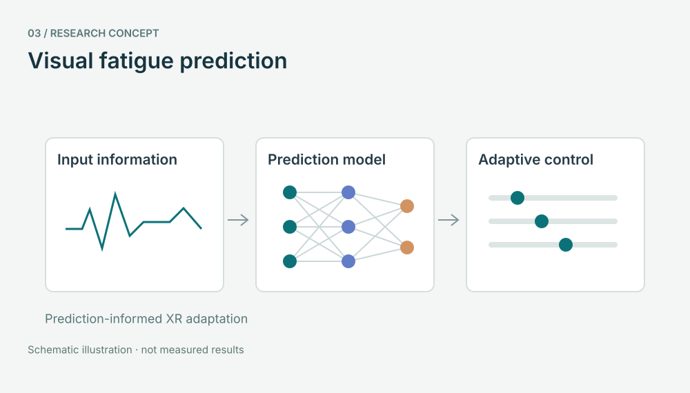

ADAPTIVE XR SYSTEMS
Visual fatigue prediction
A research project on deep-learning-based XR visual fatigue prediction and user-perception-informed adaptive fatigue mitigation.

Research question
How can visual fatigue prediction inform adaptive XR experiences?
Research approach
The project investigates deep learning for visual fatigue prediction and adaptive mitigation informed by user perception. The concept diagram shows the relationship between input information, prediction, and control.
Project
Deep-Learning-Based XR Visual Fatigue Prediction and User-Perception-Informed Adaptive Mitigation
The university project record lists a start in March 2026. Model architecture, input modalities, and performance results are not specified in that record.
University project record